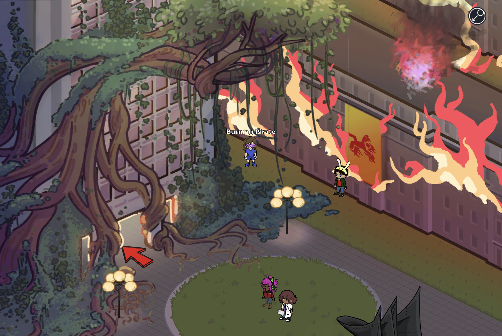
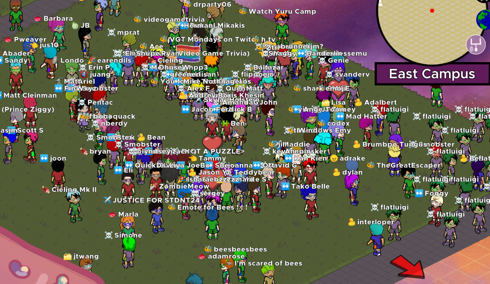
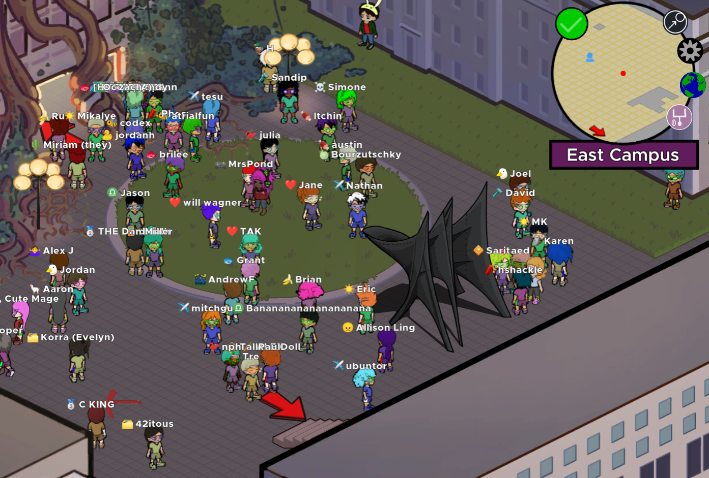
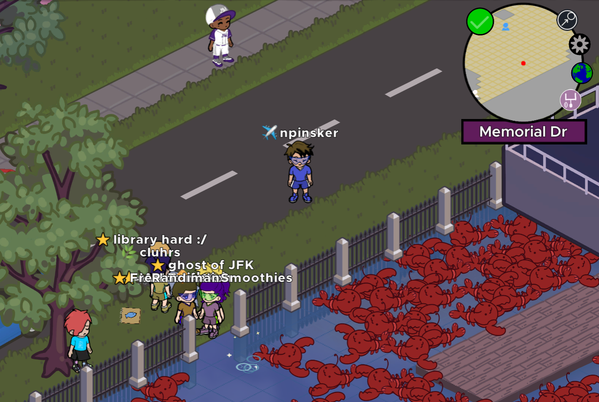

In 2020, I helped write and run the 2021 MIT Mystery Hunt with my team, ✈️✈️✈️ Galactic Trendsetters ✈️✈️✈️. Mystery Hunt is the largest puzzle hunt in the world, with thousands of participants each year. The event is normally run on MIT's campus, but was held online that year because of the spread of COVID-19.
Over 100 people contributed to our Mystery Hunt in some capacity. As the focus of our event, we built an MMO called the Projection Device. We aimed to increase the social nature of the hunt and to mix fresh ideas into many other parts of the event. Building an MMO for thousands of players was an enormous gamble for many reasons, but I think it ended up paying off and we achieved our goals.
The Projection Device is an isometric multiplayer online game set at ⊥IW, an alternate version of MIT. Players can walk around ⊥IW's campus and interact with objects and people. All players share the same world and can see each other.
During the event, teams were initially given a small area to explore in the game. As they explored, they would unlock puzzles. Solving puzzles would progress the story, unlocking more areas of campus with new puzzles to find.
Thousands of players explored the Projection Device over the weekend, reaching 1,200 concurrent players at peak.
We prepared lots of fun surprises for our players, and they also created stories of their own. Flip through the images below to see some highlights!


Design work: I was one of the members that developed and advocated for the MMO proposal. I helped draft the story, and came up with several core design ideas (such as finding puzzles within the MMO) that would help the MMO feel integrated with the hunt while not forcing those who weren't interested to engage with it.
Server work: I led development of the game server, which maintained a connection and sent information to all players. We evaluated existing solutions, then wrote our own server from scratch when none of them fit our needs. We implemented our own message-passing protocol and optimized the server in order to hit our performance goals. We built tooling and fallback plans in case something went wrong during the event (luckily, nothing did).
Client work: I built many core features of the game engine (dialog boxes, tooltips, interacting with objects, modular outfits for NPCs), many of the communal features in the MMO (emotes, whiteboards), and designed several puzzles completely within the game. I wrote most of the code to interface with our game server. Over 25 people contributed to the game in varying capacities, and I assisted a lot of them with implementation of their ideas.
Yes! Other than exploring, here are some approachable puzzles you can try:
Fishing: There are 5 hidden fishing spots around campus (one is in a building basement). See how many different fish you can catch. Watch out: there's a different trick to every pond!
Sphinx: Go to the Student Center (use fast travel), talk to the sphinx, and try to solve its riddles. (answers)
Egg Hunt: Go to the Athletics Field (southwest corner of the map; use fast travel) and see if you can find all 60 hidden eggs.